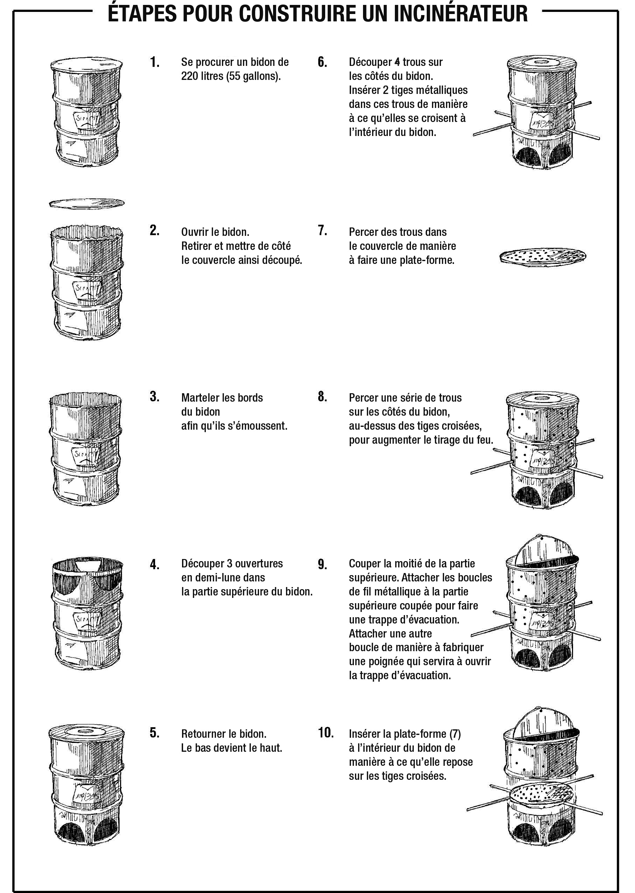

Aperçu
- Lors de certaines épidémies, vous devrez éviter la transmission de germes à d’autres personnes par le biais d’objets (comme les draps et les vêtements contaminés par les liquides corporels du patient).
- Ces mesures sont particulièrement importantes pendant les épidémies d’Ebola , de fièvre de Marburg , de fièvre de Lassa , de peste et de variole du singe .
- Un incinérateur permet de brûler ces objets et ainsi d’éviter la transmission de la maladie.
- N’incinérez des objets vous-mêmes que si vous n’avez pas d’autre solution, par exemple si l’incinération dans les centres de santé n’est pas possible.
- Soyez très prudent lorsque vous construisez et utilisez des incinérateurs, car ils peuvent être dangereux. Prévoyez toujours de quoi éteindre le feu à proximité (par exemple, un seau d’eau ou de sable).
Conseils pour la construction d’un incinérateur
- Pour construire un incinérateur, suivez les instructions figurant au verso de cette fiche.
- Conservez toujours un seau d’eau ou de sable à proximité au cas où vous auriez besoin d’éteindre le feu.
- Si vous n’avez jamais construit d’incinérateur auparavant, demandez à un professionnel ou à une personne expérimentée de vous aider ou de vous conseiller.
- Portez des vêtements de protection, et particulièrement des gants, lorsque vous manipulez des vêtements contaminés ou d’autres objets ayant appartenu aux malades décédés. Placez ces objets délicatement dans l’incinérateur et laissez-les brûler jusqu’à ce qu’il ne reste que des cendres afin d’éliminer tous les germes.
- Informez les membres de la communauté de ce que vous faites afin qu’ils se tiennent éloignés et restent en sécurité.
